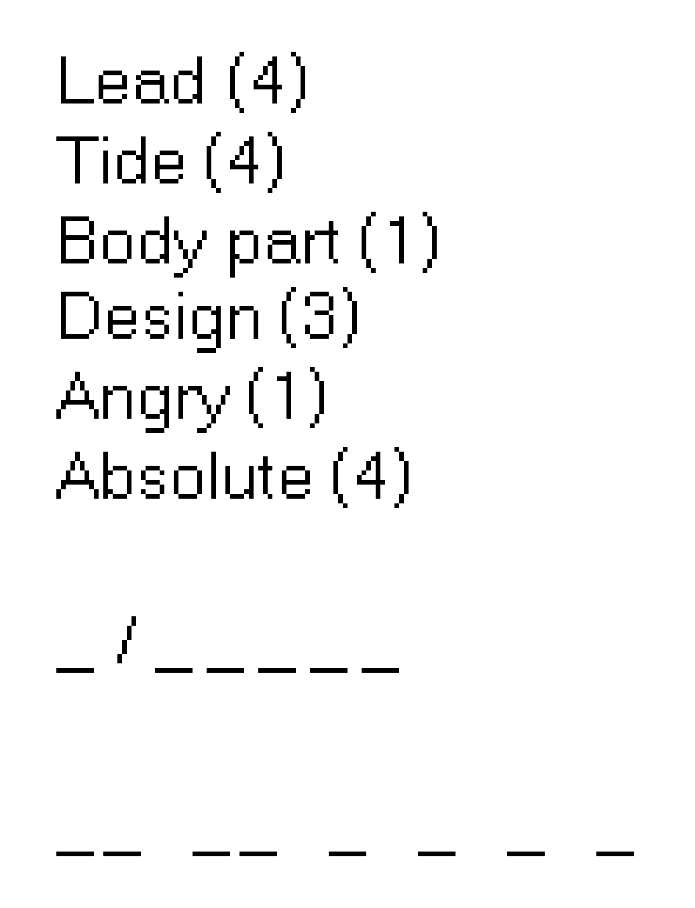

Solution: Microscope
Answer: TINY JERK
Written by Rahul Sridhar, Lewis Chen, Colin Lu, Anderson Wang
The six puzzle answers in the round are:
- MUSTARD
- PAPER PLANE
- SKULL AND CROSSBONES
- PINEAPPLE
- BUTTERFLIES
- TULIP
Like all the puzzles in the round, the additional shell for the Microscope meta is also contained in the 1000x1000 pixel image on the round page. It’s the final portion to unlock on the left side of the image:

We have six (rather ambiguous) crossword clues. The answer to each can be found as a substring of one of the puzzle answers. The parenthesized number after each clue can then be treated as an index into the substring answer to the clue to obtain a letter for each.
| Meta clue | Clue answer (substring) | Contained in puzzle answer | Index | Extracted letter |
|---|---|---|---|---|
| Lead | STAR | MUSTARD | (4) | R |
| Tide | NEAP | PINEAPPLE | (4) | P |
| Body part | LIP | TULIP | (1) | L |
| Design | PLAN | PAPER PLANE | (3) | A |
| Angry | CROSS | SKULL AND CROSSBONES | (1) | C |
| Absolute | UTTER | BUTTERFLIES | (4) | E |
When these six letters are written into the first set of blanks, we get R/PLACE , which we recognize as the name of a Reddit April Fools’ Day experiment from 2017 in which users collaboratively edited an image canvas by placing pixels one at a time. Each of this round’s puzzle answers describes an object that exists somewhere in the final r/place image when the experiment ended. We now go on a mini treasure hunt to locate them:

r/place is a 1000x1000 pixel image, just like the image from the Microscope round. This suggests we can overlay the two images. Each highlighted object that we found lies inside the region of the Microscope image with the puzzle for that answer. In fact, each object overlaps a specific piece or clue of the puzzle, and we can revisit the puzzle’s mechanic to extract an additional letter or letters! The second set of blanks in the meta shell suggest how many letters we should expect to find: two letters each from the first two puzzles, and one letter from each of the other four.

| Object | Letter(s) | Extraction method/explanation |
|---|---|---|
| MUSTARD | TI | The mustard below the Belgian flag overlaps two of the station markers on the chart in Charts depicting the Trans-Siberian Railway. These stations are Taishet and Irkutsk, in order, extracting a TI. |
| PINEAPPLE | NY | The pineapple in the artwork representing the r/trees community overlaps with a black dot in Links Interconnect that represents the digraph NY. |
| TULIP | J | The tulip near the Dutch flag overlaps with the letters D T (in a column) in Reencode. Reusing the flag semaphore mechanism on this D T pair, these two semaphore symbols next to each other appear like the letter J. |
| PAPER PLANE | E | The paper plane (inside the Telegram logo) overlaps with two blanks in Count the Solutions to This Nurikabe. When the correct number is written into all of the blanks, the two digits that overlap are 0 5, which when converted alphanumerically to a letter is an E. |
| SKULL AND CROSSBONES | R | The skull and crossbones (in the Mugiwara Pirates flag from One Piece) overlap with the blue stripe with sun from the flag of Rwanda, which was used in False Flags to spell the word HEIR. This stripe represents the letter R. |
| BUTTERFLIES | K | There is a pair of butterflies contained in artwork made by the r/Parahumans (Worm) community, which overlaps with one star in Patterns. This star is Kaus Borealis from Sagittarius, extracting a K. 1 |
The extracted letters spell out the meta answer, TINY JERK.
-
There is also a single blue butterfly made by r/LifeIsStrange somewhat nearby. However, we are looking for plural “butterflies”, and it also doesn’t overlap with any puzzle content. ↩
Appendix
Here is a GIF of the round as it unlocks.